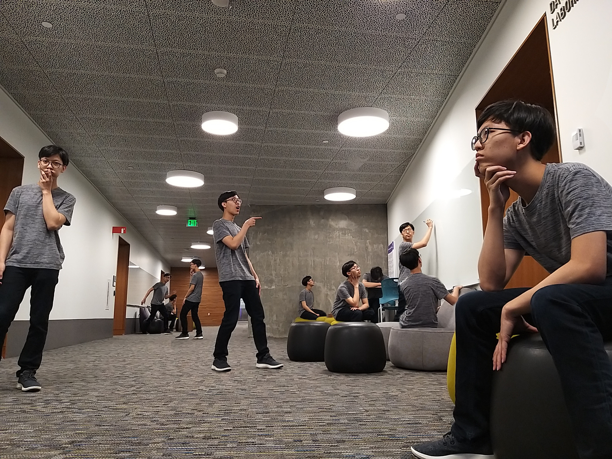
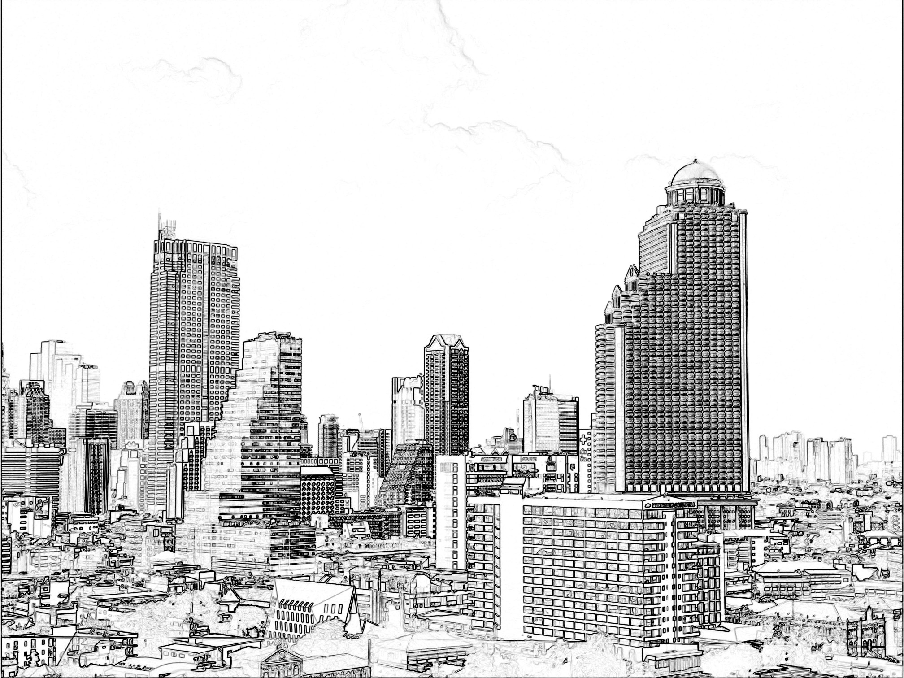

Jim's Creative Pursuits
This is a space where I showcase my creative pursuits in photography, digital art, and
music. Hopefully, you enjoy them! :D
Photography

The above image was the image that I posted myself on Reddit nearly two years ago!
I just rented a camera kit from UW STLP, and found an opportunity to take this image
on the 8th floor of McMahon Hall in my freshman year.

This was also the image I posted onto Reddit. I took this panoramic image in my freshman
year! The sky was SO nice and there is not a lot of people on the quad too.
Digital Art

I took the images myself in CSE Undergraduate lounge on Jan 1 2020, when no
one was there. I made this stacked image in GIMP.

I originally took this image in one Bangkok skyscraper, and I processed it using
a self-made image manipulator program.
Music
I composed the song and have it recorded through Musescore! This is probably the
first song ever that I felt confident in sharing.